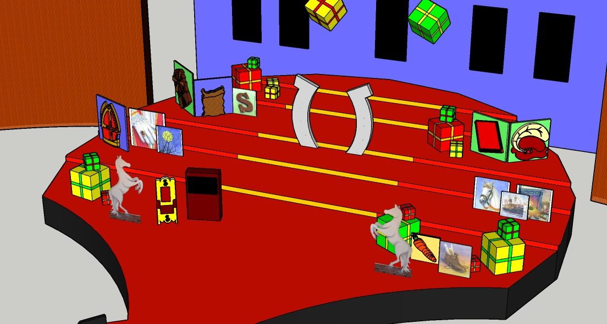

Ik ben een perfectionist.
Op het gebied van werk en school ben ik erg perfectionistisch. Geen enkel detail moet missen. voordat ik mij voor deze opleiding heb aangemeld volgde ik een opleiding dtp. Helaas kon ik mezelf niet helemaal hierin vinden, dus had ik besloten om te gaan werken. Nu doel ik om een opleiding af te ronden binnen de komende 4 jaar. Zelf hou ik erg van bezig zijn met ontwerpen zoals op sketch up.